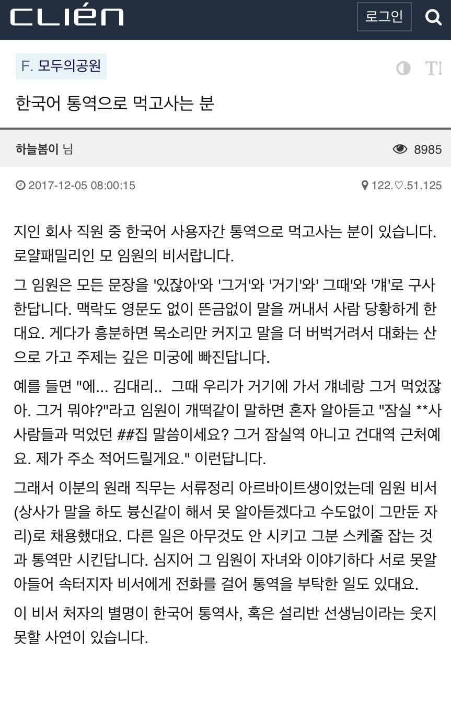

그 저기 있잖아 그거 그때 거기에서 걔가 그거였나?한국 회사에서 한국어 통역으로 월급받는 직원
댓글
볼때마다 주작같지 않은게 만약 주작이라면 상상력이라는 거잖아?
저정도 구체적인 폐급 인물 창조 상상력 발휘하기 쉽지않아보임ㅋㅋ
경상도 사람인가 가가가가 가가가다도 아니고ㅋㅋ
지능 개떨어져 보이는데 어떻게 임원된건지가 더 궁금하다
본문에 로열패밀리라고 적혀있네
아 로열패밀리가 그뜻이구나 ㅋㅋ
골든블러드
마 성골 진골 모르나
나도 우리 와이프가 저렇게 말해도 다 알아듣는데
일할 땐 주어 생략하지 말고 똑바로 말해서 오해나 잘못된 해석이 없도록해야지..
빡대가리색히들임
사실 고도의 암호문 아닐까?
거긴 나온는 곳이지 들어가는 곳이 아니예요. 들어가는 곳은 따로 소개시켜드릴게요.
머리에 데이터가 이미 있는거임
누군가를 지정해서 거기 하면 장소 데이터 나오고 그거 하면 해당 장소의 item 기역력 좋고 출력 잘되는 케이스
공감하는 사람들 많은거보니 저런 틀딱 많고
옛날엔 저렇게 책임회피 했나봄
대충 말해놓고
내가 말했잖아 혹은 난 그런 말 한 적 없는데
뭐 이런걸로
개떡같이 말해도 찰떡같이 알아들어라 ㅋㅋㅋㅋ
책임회피는 아닌뎅... 젊어서 좋겠다
책임 회피 아니면 치매..?
술 좋아하고 특히 소주 20년 넘게 먹으면 다 저렇게 됨.
나폴레옹이야?..
태어나서 제대로 일해본적 없고 집안 잘 타고났거나
아니면 진짜 운이 제대로 트여서 그랬거나 그 외 다른 이유로
정확하게 말할 필요가 없이 산 사람들이 저런 화법 구사함
일반적으로 저딴식으로 말하면 개욕처먹거든 저렇게 살아도 됐다는 방증이야
거시기 머시기로 개그치던게 있던 거 보면 저런 사람이 없지는 않음.
존나 능력자임
우리 외주업체 사장님이 저정도까진 아닌데 맨날 주어를 빼고 얘기해서 뭔말하는지 모르겠을때가 많음.
거기다 나는 A얘기를 하는데 갑자기 주어도 없이 B얘기를 꺼낼때가 있는데 그러면 진짜 대체 뭔 대화를 하는지 알 수가 없음.
이런 사람 뿐만이 아니라 거래처들 중에서도 연세 있으신분들이 꼭 이런 화법 쓰는데 진짜 답답함
ㄹㅇ 나도 거래처가 a얘기하다가 갑자기 b 얘기하고 그러다가 갑자기 "아 그리고" 하면서 a 얘기로 돌아감 ㅋㅋㅋㅋ
그래서 걍 주제 돌아가는 기미 보이면 뭔말하든 말끊고 뭔말인지 이해 못하겠다. A만 딱 얘기하자함
실제로 저런 작자와 일한 적 있어서 어느 정도 신빙성은 있다고 본다. 굳이 저걸로 직원 두는 건 진짜인가 싶지만.
말 잘 알아듣는 똘마니 하나 늘 데리고 다니더라. 생각보다 모자란 것들이 윗줄에 서는 경우가 더러 있다. 백두혈통이든 다른 재능으로든.
나도 비슷한 상사 있었는데 1년쯤 같이하니까 다 알아들음 거시기 거슥 거식 거 이따구로 말하는데도 어차피 물어보는게 내가 알고있는 카테고리니까
병신같이 말해도 찰떡같이 알아듣는 것도 꽤 중요한 능력인거 같다.
근데 클리앙 틀딱들은 여자를 꼭 처자라고 해야하냐? 진짜 빠짐없이 처자라고 그러는게 개웃기네
같이 처 자고 싶다는게 아닐까
ai가 우리 보는 심정이 저럴지도..